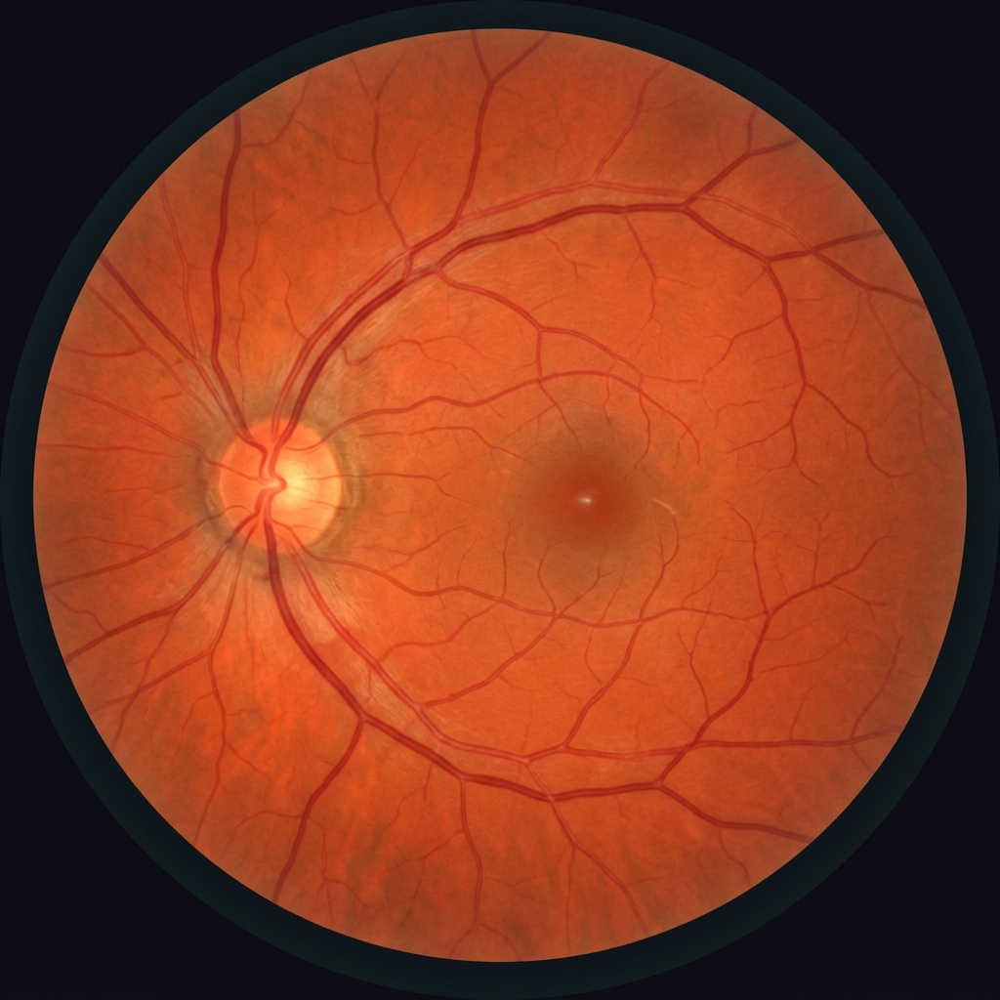
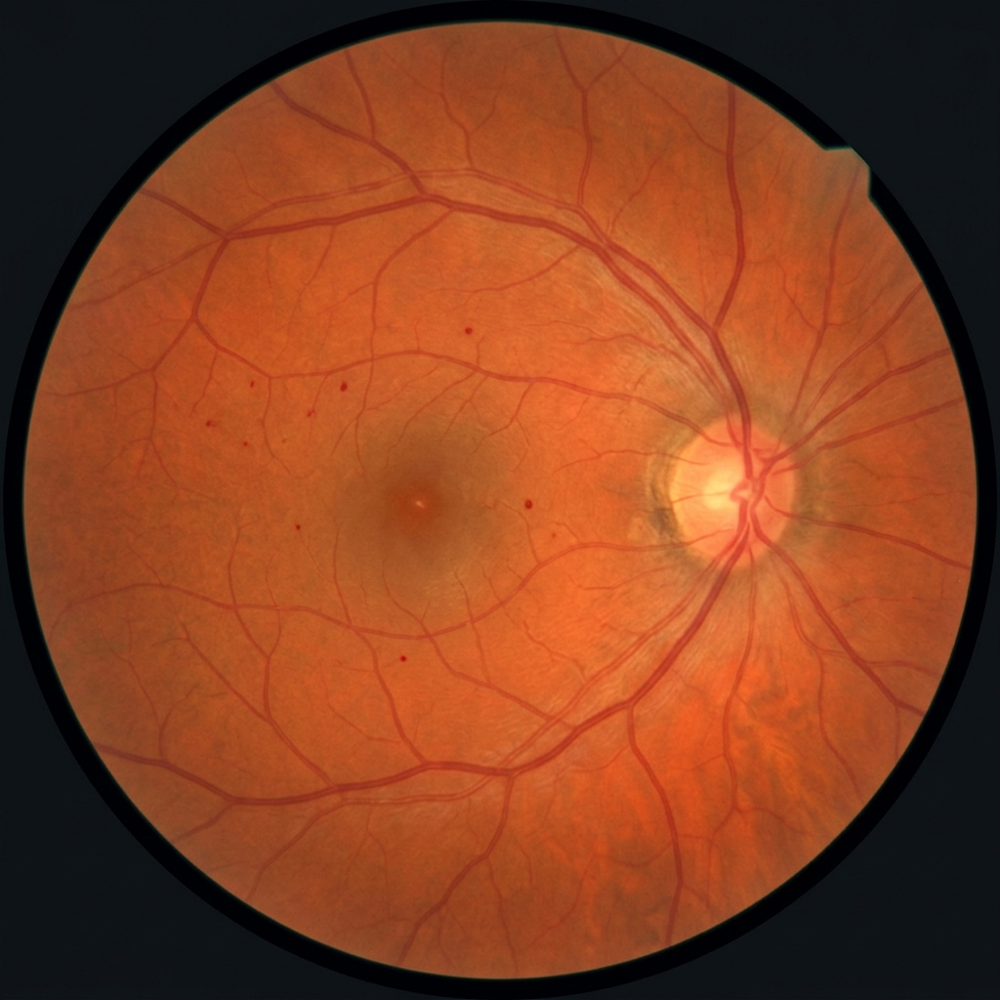
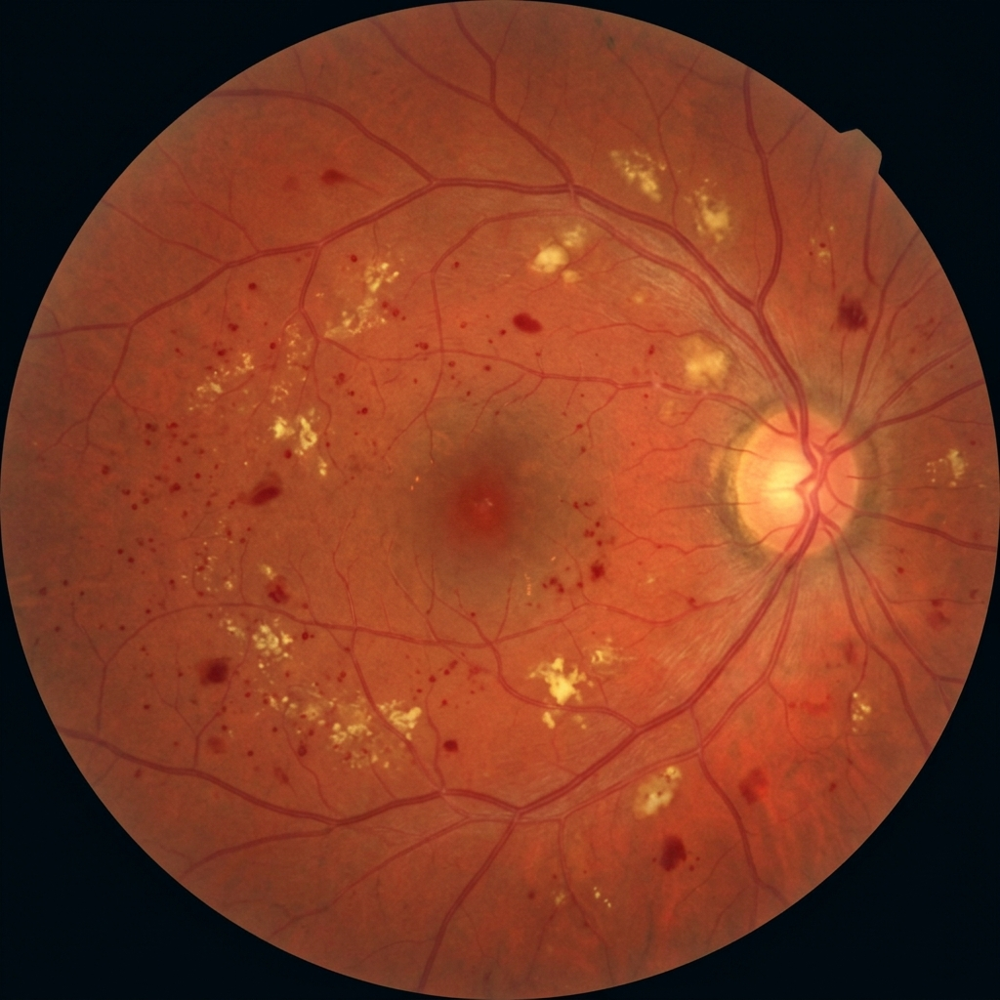
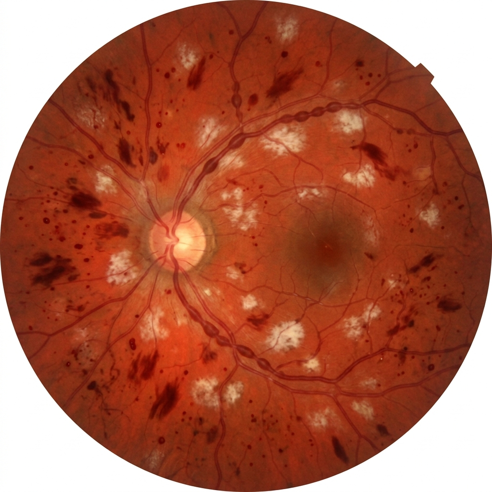
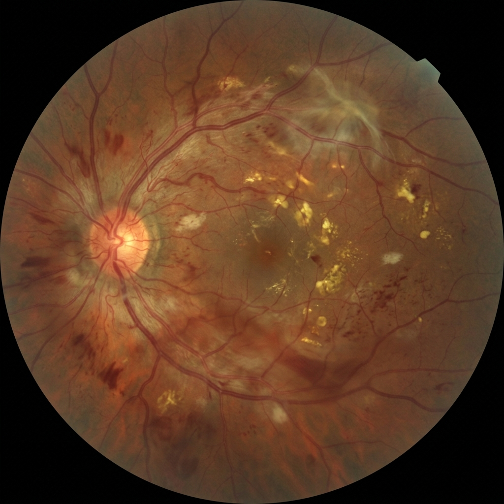
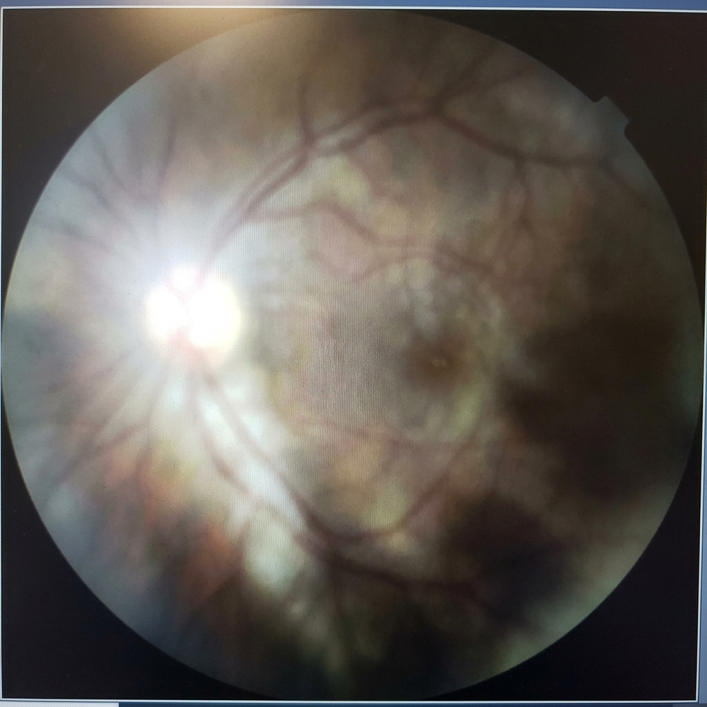

Analysis Input
Upload Fundus Image & Clinical Data
Select a sample image or upload your own, then enter patient clinical information
📷 Retinal Fundus Image
Click to upload or drag and drop
PNG, JPG up to 10MB
📌 Or select a sample case:

No DR

Mild

Moderate

Severe

Proliferative

⚠ Low Quality
📋 Patient Clinical Data
⚡ Quick-fill sample patient:
Healthy (35y)
Mild Risk (48y)
Moderate Risk (55y)
High Risk (62y)
Critical (68y)